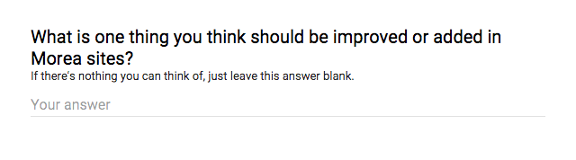

Summary
In November, 2015, the instructors for seven courses whose websites were built using the Morea Framework asked their students to fill out an online survey asking their opinion of the course website. Out of the 207 students who received the request, 151 responded, for a participation rate of 73%. One course was 100 level, one was 200 level, three were 300 level, one was 400 level, and one was a 600 (graduate) level. Six of the courses were in the Department of Information and Computer Sciences, and one was in the Department of Information and Technology Management. All were at the University of Hawaii.
The survey was virtually identical to one given to Morea users in Spring of 2015, whose results are reported here.
The goal of the survey was to determine if end-users find that the Morea Framework provides a useful alternative to learning management systems such as Laulima. In addition, what changes or enhancements would end-users find desirable.
Survey results indicate that user satisfaction with the Morea Framework course websites is quite high: 68% of respondents prefer it to Laulima in particular and 66% find it easier to use than other course websites in general. From a user perspective, three positive features stood out: its organization, the look and feel, and the schedule page. This semester, the most common user improvement request was not about the framework, but rather content-level issues that could be resolved by the instructor. After content, users also requested incorporation of "Laulima" features like a gradebook and uploading assignments.
In conclusion, the evidence from this survey suggests that the Morea Framework has improved since last semester, and that users prefer it to other course website designs.
The following sections present the survey data in more detail.
Q1: Page evaluation
While instructors are free to customize the top-level page structure of a Morea website, all of the instructors in this survey chose to retain the "standard" six pages (though all did augment them with additional pages). The first question asked users to evaluate the usefulness of the six standard Morea pages:

Here is a summary of the responses:

These results show that most users found all of the standard Morea pages to either useful or extremely useful. The most useful page was the Schedule page (which is heartening, since a great deal of work went into improving that page prior to this semester.)
The free text responses below will provide further insight into the usefulness of the Morea standard pages and how they can be improved.
Q2: Morea vs. Laulima
Laulima is the learning management system provided to all faculty at the University of Hawaii, and so most students in this survey have prior experience using it. Laulima is less "opinionated" than Morea in that it doesn't require instructors to organize their course materials into modules that are themselves organized into outcomes, readings, experiences, and assessments. Laulima also provides functionality not available in Morea, such as automated assignment submission and a gradebook. This question asked users to compare Morea to Laulima:

Here is a summary of the results:

Despite the fact that Laulima was probably more familiar to users, and that it provided more functionality, 68% preferred Morea to Laulima, around 10x more than those who preferred Laulima to Morea.
The free text responses below will provide further insight into this response, and suggests that the strong preference for Morea results at least in part from its "opinionated" nature: users like the organization imposed on course materials by Morea.
Q3: Morea vs. others
The next question requested user assessment of how easy Morea is to use relative to any other course website they have have encountered:

Here is a summary of the results:

The preference for Morea dropped a little from Question 2, but still indicates a majority of 66% find Morea to be the easiest to use website of all they have experienced.
Q4: Key features
To get a sense for the capabilities of Morea that are of special significance to users, we asked users to describe one thing they liked:

Here is an excerpt of the 120+ responses:

To better understand this data, I read through the responses and created a "coding" based upon common themes expressed by multiple users. Although the question requested just one item, many users responded with comments about multiple features they liked.
Since the question asked for just one aspect of Morea, I am terming the most common responses "key features" as they indicate things that multiple users found to be most positive about the site.
Organization
Over 40 of the users indicated that a key feature of Morea is the organization it imposes on course websites. Comments included:
Very organized and breaks down the topics for ease of viewing throughout the semester
I really like how it is broken up into modules. It makes getting to the coursework easier. It is also more organized and nicer than laulima. I also like how it has a schedule. Overall, I have found my experience with the Morea Framework to be extremely positive. I wished I had this level of organization from the start of my education at the University of Hawaii at Manoa.
I really like the presentation style, it is easy for me to keep track of what we are covering in each section due to everything being broken up into modules and it's also much easier for me to understand what is expected at each milestone of the course.
The layout is not just modern. It's also more intuitive. I don't need to waste time with issues like not always returning to the previous page or just plain finding myself around. Even after using Laulima for a few years now, it still trips me up when I use it.
More evidence for the utility of Morea organization is provided by Question 1, in which most users found all of the pages to be useful.
Layout & navigation
Around 36 users indicated that they liked the layout and/or navigation capabilities of Morea. Here are some of the responses reflecting this preference:
User interface is pretty straightforward, its pretty intuitive to figure out what needs to be done to complete tasks.
The layout is very user friendly.
I thought that Morea was visually appealing to use compared to Laulima and I had no problems navigating the website.
Website feels a lot more "modern" and doesn't have that clunky feel to it like Laulima does.
Schedule
Prior to this semester, we implemented better support for a Schedule page which would show when modules are presented and assignments (readings and/or experiences) are due. Users can click on a module, reading, or experience to be taken to its associated page. Here's an example schedule page:

Perhaps the most significant difference since the Spring, 2015 survey is the positive response to the schedule page. Here is a sampling of the 33 comments:
My favorite was the calendar, it really helped me keep track of my assignments.
The schedule helps me keep track of what is due and what we're going to do in class. I like that it links the assignments on each day to the actual assignment so I don't have to click between tabs and search for things.
I loved the schedule and how it allowed me to easily navigate week-to-week and find the slides and exercises without going into the individual modules and clicking them.
Q5: Key improvements
The final question asked users what they would like to see changed or improved in Morea sites:

Here is an excerpt of the 75 comments:

Improve content
This semester, the most requested key improvement was to improve content. In other words, 24 user improvement requests were associated not with framework deficiencies but with the instructor's presentation of material. For example:
Could really use an announcement page.
There are some deadlink contents.
I think that the footer should include Instructor and TA information. I'm always having to click on the introduction module to find office hours and email addresses.
Keeping the schedule up to date. Deadlines and quizzes to be visible on the schedule would be helpful.
Add Laulima functions
13 users indicated they would improve Morea by porting some or all of the functionality now provided by Laulima. Some of the responses:
In comparison to Laulima, the only things I like better about Laulima are the resources and grades. Also, the assessments are nice but it doesn't show an overall grade for an individual in the class.
Tests and quizzes and the grade book (and whatever else Laulima supports that Morea does not) should appear there if they're to be used in a course. Then there is no need to use Laulima; no need to bounce back and forth between two sites for one class.
The general idea that I got from this site was that it is a course information site. The framework replaces teacher based websites for coursework/information but does not entirely replace the laulima. The framework is excellent and exceeds laulima by leaps and bounds through the user-interface allowing for more digestible content. However, It needs a way to publish grades, submit assignments, etc. in order to compete with laulima.